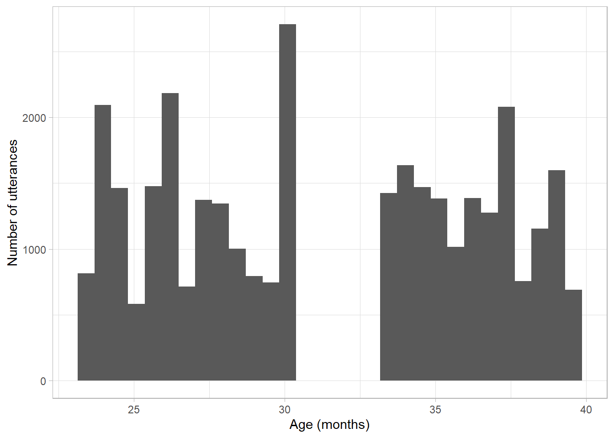
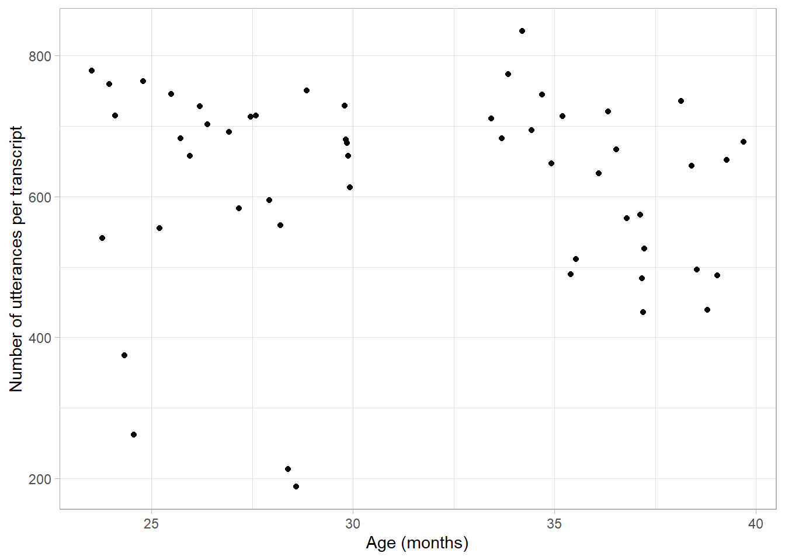
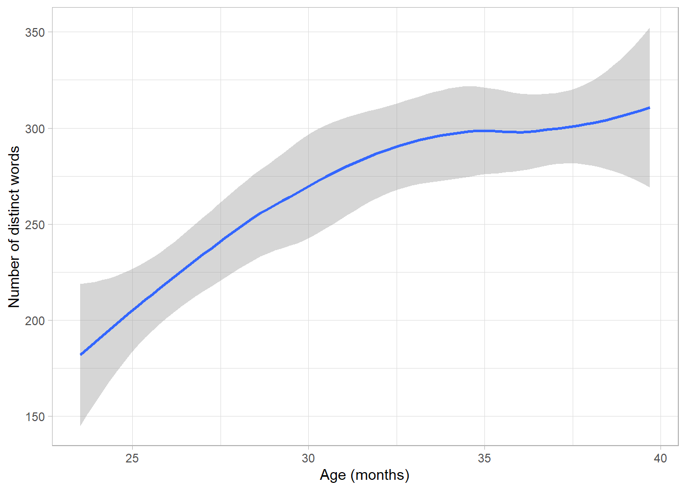
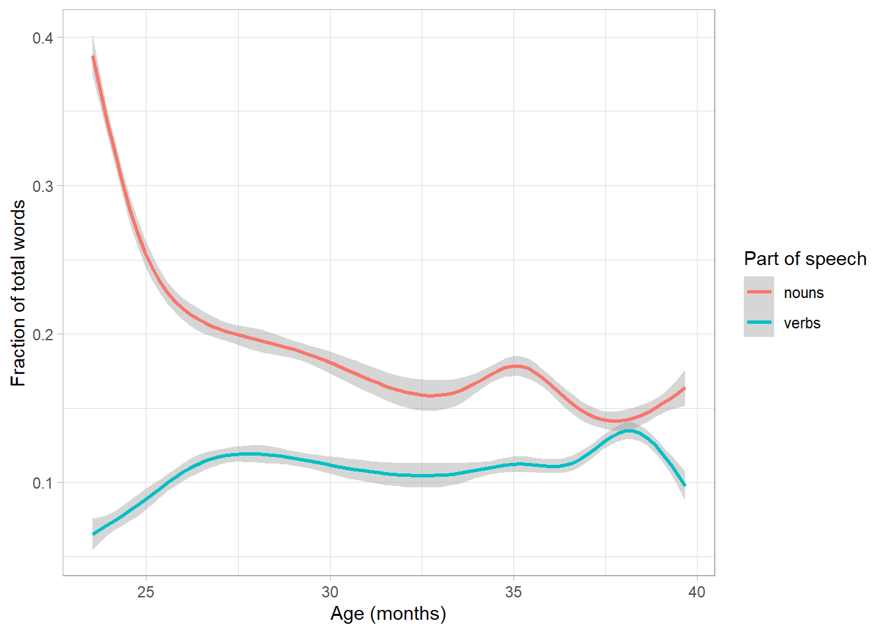
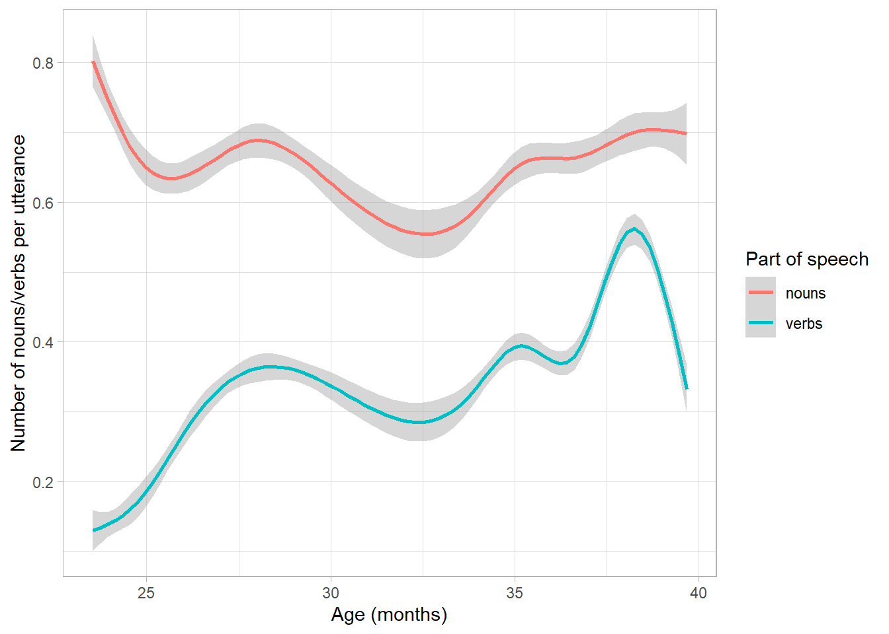
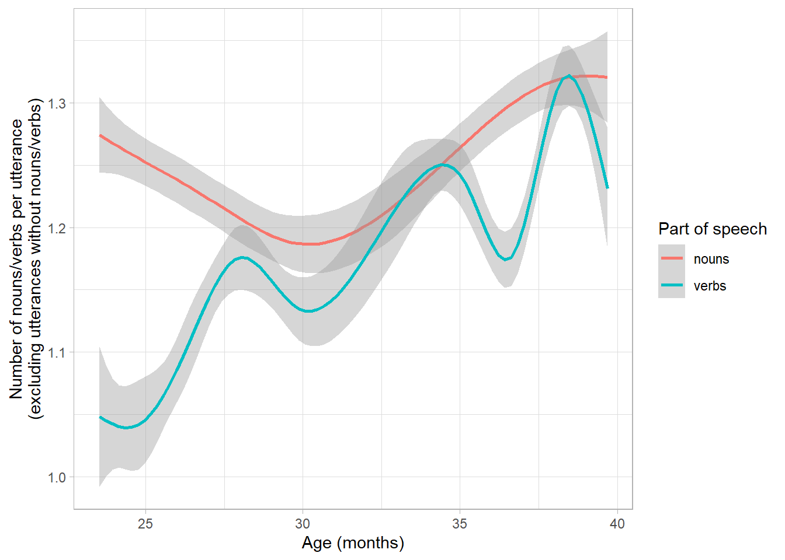
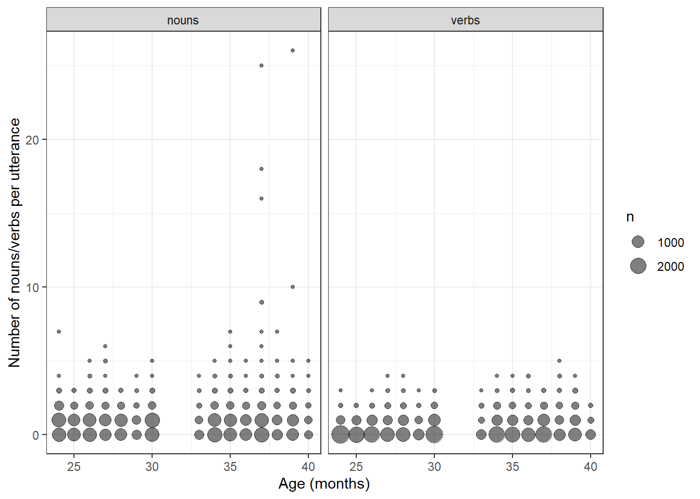
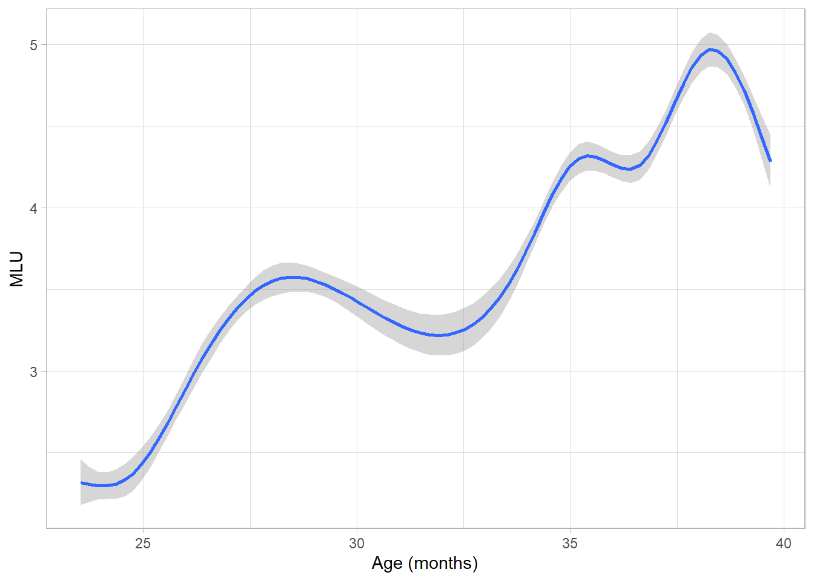
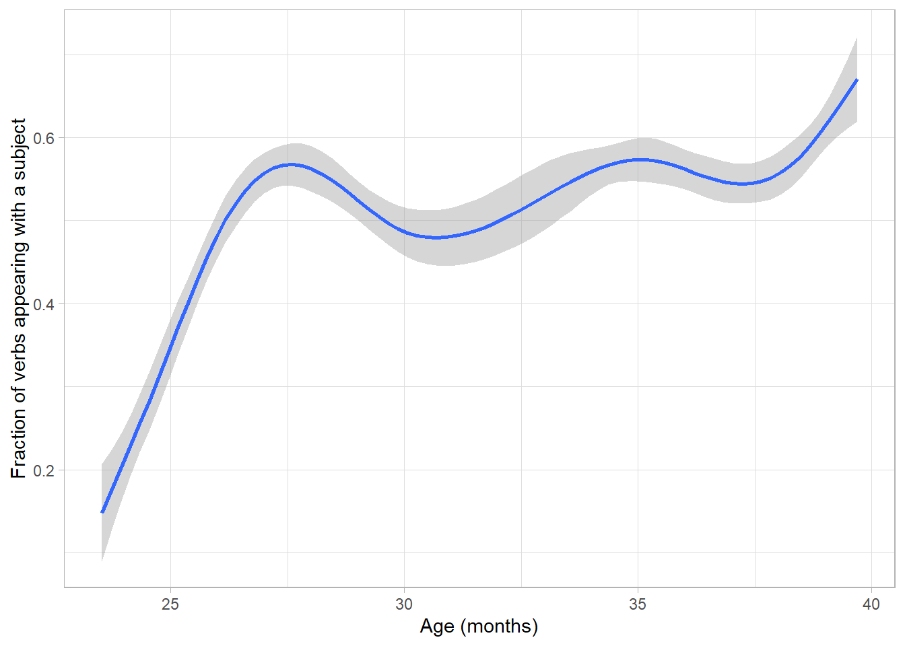
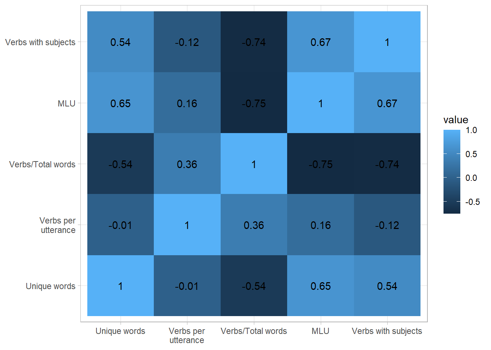

# Load required packages
library(tidyverse)
library(tidytext)
library(childesr)
# Get utterance and token data for child Nina from the Suppes corpus
utt <- get_utterances(collection = "Eng-NA", target_child = "Nina",
corpus = "Suppes", role = "target_child")
tok <- get_tokens(token = "*", collection = "Eng-NA", target_child = "Nina",
corpus = "Suppes", role = "target_child")SCICOGN302 workshop II:
Case study on measuring linguistic development
Introduction
This case study shows how to develop a research question related to child language development that can be explored in depth using the CHILDES database. It is an illustrative example; you should develop your own research question and use appropriate methods to create a coherent story for your poster. You should motivate your research question and contextualize your findings with references to relevant literature.
This example starts with a broad research question: what are good indicators of the language development level of native English speaking children? Existing literature has proposed many different measures based on the size and complexity of vocabulary or adherence to grammar rules. Our goal is to calculate several of these indicators on sample data, and draw conclusions about their relative effectiveness in capturing variation in language skills.
Exploratory data analysis
In this case study we focus on the language development of an English-speaking child called Nina to. Nina has 52 available transcripts in the database, recorded when she was 2–3 years old – a crucial period in language acquisition for most children. Therefore we can use Nina’s data both to see how language development measures change during language acquisition and to compare Nina’s result to patterns described in the literature.
To make sure we have a sufficient amount of data to draw valid conclusions, we can plot a histogram of Nina’s utterances over time.
# Histogram of target_child_age
utt %>%
ggplot(aes(target_child_age)) +
geom_histogram() +
xlab("Age (months)") + ylab("Number of utterances") +
theme_light()
We notice a gap of approximately three months where no transcripts are available, but for the rest of the sample period it appears that we have sufficient data to get a good picture of Nina’s language skills.
In addition, Gavin and Giles (1996) found that some key language development measures have high reliability when data is drawn from transcripts with at least 175 intelligible utterances. To see whether we can expect our results for Nina to be reliable based on that measure, we can plot the number of utterances per transcript.
# Scatterplot of the number of utterances per transcript by age
utt %>%
filter(stem != "") %>%
count(transcript_id, target_child_age) %>%
ggplot(aes(target_child_age, n)) +
geom_point() +
xlab("Age (months)") + ylab("Number of utterances per transcript") +
theme_light()
The shortest transcripts in the sample contain about 200 (partly) intelligible utterances, and most transcripts are between 500-800 utterances long. Therefore the transcripts are long enough for reliable measures.
Measures of language development
Vocabulary diversity
Number of distinct words
The most obvious way to measure the size of a child’s vocabulary is to count the number of distinct words used. According to Speech and Language UK, 18-24 months old children are expected to use about 50 unique words, while by the age of 3 years, most can use up to 300 words.
We can count Nina’s unique words used at each age, and see if a similar pattern emerges.
# Count unique words per age
unique_words <- tok %>%
distinct(target_child_age, stem) %>%
count(target_child_age)
# Fitted curve of unique words over time
unique_words %>%
ggplot(aes(target_child_age, n)) +
geom_smooth() +
xlab("Age (months)") + ylab("Number of distinct words") +
theme_light()
The size of Nina’s active vocabulary increases from about 180 words to over 300 – a clear positive trend suggesting that Nina’s language skills are developing. Compared to the benchmarks specified by Speech and Language UK, Nina appears to be ahead of her peers in the size of her vocabulary at 2 years old, but this difference disappears by the time she is 3 years old.
Verb production
Goldin-Meadow et al. (1976) offer additional insight into the vocabulary development of 2-year-olds. They present this period as a transition from a Receptive stage to a Productive stage by gradually closing the comprehension/production gap. They explain that in the Receptive stage children use few distinct nouns and (nearly) no verbs, while in the Productive stage they use a wider range of nouns and start using more verbs.
If Nina is indeed in this stage of language development during the sample period, we can hypothesize that initially most of her spoken words are nouns and the proportion of nouns is very small, but over time the proportion of verbs increases. To test this expectation, we can track the fraction of nouns and verbs in Nina’s speech over time.
We can up with (at least) two different methods of counting nouns and verbs: we can either count the proportion of nouns and words in total words used, or we can count the average number of nouns/verbs per utterance. The first method has the advantage that the result is bound between 0-1 and has a straightforward interpretation as a percentage. The second method has the advantage that it also incorporates the increasing complexity of utterances into the indicator.
We can plot the fraction of nouns and verbs in total words as follows.
# Calculate proportions of nouns and verbs in 'tok' dataset
nv_prop <- tok %>%
mutate(nouns = as.numeric(part_of_speech == "n"),
verbs = as.numeric(part_of_speech == "v")) %>%
pivot_longer(c(nouns, verbs), names_to = "Part of speech") # Convert to long format
# Fitted curve of the fraction of nouns and verbs
nv_prop %>%
ggplot(aes(target_child_age, value, color = `Part of speech`)) +
geom_smooth() +
xlab("Age (months)") + ylab("Fraction of total words") +
theme_light()
According to this indicator, the fraction of nouns decreases sharply from about 40% to 15%, while the fraction of verbs approximately doubles from 5 to 10%. Both changes take place mostly at the start of the sample, i.e. when Nina is turning 2 years old. This result is consistent with the hypothesis that the shift towards using more verbs happens at the age of 2 years. In addition, we see that the fall in the fraction of verbs is not fully compensated by the growth of verb use, suggesting that Nina gradually uses more other constructions as well, shifting to mostly noun-based speech to more diverse expressions.
The following figure shows the average number of nouns and verbs per utterance. We can use regular expressions to detect all occurrences of nouns and verbs in the part_of_speech variable.
# Count nouns and verbs per utterance
nv_count <- utt %>%
mutate(nouns = str_count(part_of_speech, "^n|n$| n(:| )"),
verbs = str_count(part_of_speech, "^v| v")) %>%
pivot_longer(c(nouns, verbs), names_to = "Part of speech")
# Fitted curve of nouns and verbs per utterance
nv_count %>%
ggplot(aes(target_child_age, value, color = `Part of speech`)) +
geom_smooth() +
xlab("Age (months)") + ylab("Number of nouns/verbs per utterance") +
theme_light()
The number of nouns per utterance is relatively stable at 0.7-0.8, while the number of verbs starts from around 0.1 and reaches above 0.5 (the numbers are less than 1 because utterances with 0 nouns/verbs are also included in the calculation). This figure is more convincing evidence for an increase in verb usage than the previous result.
To check the robustness of the results, we can also repeat the previous plot but excluding utterances without nouns/verbs from the average calculation. In addition, we can use a different visualization to get a better idea of the underlying distribution of word counts.
# Repeat previous plot excluding utterances without nouns or verbs
nv_count %>%
filter(value > 0) %>%
ggplot(aes(target_child_age, value, color = `Part of speech`)) +
geom_smooth() +
xlab("Age (months)") + ylab("Number of nouns/verbs per utterance\n(excluding utterances without nouns/verbs)") +
theme_light()
The fitted curve excluding observations without verbs or nouns is in line with the previous results. If an utterance features a noun, on average it features 1.2-1.3 nouns (without a clear linear trend). Utterances featuring a verb are initially likely to only contain a single verb, while by the end of the sample period the average number grows to 1.25-1.3. A new insight from this plot is that near the end of the sample period the number of nouns and verbs becomes comparable.
The following scatterplot (or “bubble plot”) shows the frequencies of each noun/verb count with the size of the respective points. Nina’s age is rounded to integers for a clearer visualization.
# Replot the previous data as a bubble plot
nv_count %>%
mutate(age = round(target_child_age)) %>%
count(age, `Part of speech`, value) %>%
ggplot(aes(age, value, size = n)) +
geom_point(alpha = 0.5) +
xlab("Age (months)") + ylab("Number of nouns/verbs per utterance") +
facet_wrap(~`Part of speech`) +
theme_bw()
From this figure we can conclude that most utterances contain either 0 or 1 nouns/verbs, longer utterances are less common and therefore have a relatively small impact on the averages. We also notice that in the last few months there are some utterances with exceptionally high noun counts. If we find those observations in the dataset, we see that Nina was singing the alphabet song, and the dataset characterizes each letter in the song as a distinct noun. The effect of these outliers on the average can explain the increase in the average number of nouns at 36-38 months.
The figures consistently show the patterns that verb usage increases over time and that the importance of nouns compared to other speech elements decreases over time. Both of these patterns are in line with the descriptions of the language skills of two-year-olds presented by Goldin-Meadow et al. (1976).
Grammar, language complexity
Mean length of utterance
Probably the most well-known way to measure language complexity in children is the Mean Length of Utterance (MLU) in morphemes. This indicator is calculated as the average number of morphemes per utterance, and existing research has established cutoffs and benchmarks to evaluate language performance based on MLU in young children (Miller & Chapman, 1981).
Therefore we can plot how Nina’s MLU changes over time, and compare her results to her peers.
# Fitted curve of MLU over time
utt %>%
ggplot(aes(target_child_age, num_morphemes)) +
geom_smooth() +
xlab("Age (months)") + ylab("MLU") +
theme_light()
When Nina is 2 years old, her MLU is between 2-2.5. By the age of 3 years, it increases to 4-5 relatively steadily, with small fluctuations.
In the data of Miller & Chapman (1981), 24 months olds had an average MLU of 1.9 (slightly lower than Nina at the same age), while 36-39 months olds had an average MLU between 3.2-3.5 (significantly lower than Nina at the same age). Nina’s change in MLU is also higher than the estimated average 1.2 morpheme growth per year for children of Nina’s age found by Miller & Chapman.
Subject omission
The last measure of language development that we consider is based on Valian (1991) and concerns the correct use of grammar. In particular, Valian looks at children’s tendency to omit subjects from sentences at early stages of development.
We can observe how frequently Nina omits subjects from sentences by finding combinations where a verb appears with a subject (allowing modals or auxiliaries in between). We limit the sample to declarative and question sentence types that include at least one verb.
# Identify cases where subjects may be needed, and detect where subjects are present
utt_sub <- utt %>%
filter(str_detect(part_of_speech, "^(v|.* v)"),
type %in% c("declarative", "question")) %>%
mutate(subject = str_detect(part_of_speech, "(pro:(sub|per)|n(:prop)?)( mod)?( aux)? v"),
subject = as.numeric(subject))
# Fitted curve of included subjects over time
utt_sub %>%
ggplot(aes(target_child_age, subject)) +
geom_smooth() +
xlab("Age (months)") + ylab("Fraction of verbs appearing with a subject") +
theme_light()
It appears that in the beginning Nina adds subjects to her verbs in less than 20% of the cases, but this number grows to over 60% as she gets older. This trend indicates that Nina has a strong tendency to omit subjects when she is about 2 years old – as is common for 2-year-olds according to Valian – but her understanding of the grammar rule that English requires subjects improves over time.
In Valian’s data children with MLU comparable to Nina include subjects in 40% (MLU~2) to 80% (MLU~4) of the time. These values suggest better performance than Nina’s, but a partial explanation for the difference is that Valian’s data excludes imperative statements that do not require subjects from the calculation. To reliable identify imperative statements, we would need more data on the context of each conversation, therefore doing so is not feasible in this case study. We can nevertheless recognize that both Nina and the children in Valian’s sample show a 40 percentage point difference in correct subject use corresponding to Nina’s initial and final MLU.
Conclusion
In this case study we considered four different measures of language development based on academic literature. The first two related to the size and diversity of vocabulary, while the other two indicators concerned the complexity and grammatical correctness of utterances. According to all indicators, our test case Nina reached the benchmarks that a child her age is expected to reach. In addition, her distinct word count suggests that she was somewhat ahead of her peers at the age of 2 years, and her MLU puts her ahead of her peers in the full period when she was observed, but especially at the age of 3 years.
For further insight into how these four measures compare, the following plot shows all cross-correlations of the measures (for the noun/verb ratios of Goldin-Meadow et al. we focus only on verb frequencies and show both the proportion of verbs in total words and the number of verbs per utterance).
# Summarize all previous datasets, grouped by age
verb_count <- nv_count %>%
filter(`Part of speech` == "nouns") %>%
group_by(target_child_age) %>%
summarize(v_count = mean(value))
verb_prop <- nv_prop %>%
filter(`Part of speech` == "nouns") %>%
group_by(target_child_age) %>%
summarize(v_prop = mean(value))
mlu <- utt %>%
group_by(target_child_age) %>%
summarize(mlu = mean(num_morphemes, na.rm = TRUE))
subject <- utt_sub %>%
group_by(target_child_age) %>%
summarize(subject = mean(subject))
# Join all the summarized data frames together by age
unique_words %>%
left_join(verb_count) %>%
left_join(verb_prop) %>%
left_join(mlu) %>%
left_join(subject) %>%
# Rename variables of interest
select("Unique words" = n, "Verbs per\nutterance" = v_count,
"Verbs/Total words" = v_prop, "MLU" = mlu, "Verbs with subjects" = subject) %>%
# Calculate pairwise correlations
cor() %>%
reshape2::melt() %>%
# Plot data on a heatmap
ggplot(aes(Var1, Var2, fill = value)) +
geom_tile() +
geom_text(aes(label = round(value, 2))) +
xlab(NULL) + ylab(NULL) +
theme_light()
According to the correlogram the number of unique words, the MLU, and the fraction of utterances with subject use have the highest pairwise correlations. Both the number of unique words and the MLU are very commonly used in the literature, so a low correlation between them would be concerning, as that could imply that they do not measure the same construct well. The finding that the fraction of verbs appearing with a subject has a strong positive correlation with these two more common measures suggests that it is also a good measure of language development.
The number of verbs per utterance does not have a strong (positive or negative correlation) with any other measure, which suggests that it does not capture the same variation in Nina’s linguistic development that the other indicators do. The fraction of verbs in total words spoken has a strong negative correlation with the number of unique words, the MLU, and the fraction of utterances with subjects. Since our hypothesis was that as language develops, children use more verbs in their speech, these results contradict our expectations. It would be interesting to explore the source of this discrepancy further.
For now, we can conclude that the two most commonly used measures of language acquisition, the number of unique words measuring vocabulary size and MLU measuring utterance complexity both seem to capture language development well. In addition, an indicator of proper subject use with verbs, as used by Valian (1991), shows that measuring adherence to a basic grammar rule also captures the same patterns.
References
- Ages and stages. (n.d.). Speech and Language UK: Changing Young Lives. Retrieved September 10, 2023, from https://speechandlanguage.org.uk/talking-point/parents/ages-and-stages/
- Gavin, W. J., & Giles, L. (1996). Sample Size Effects on Temporal Reliability of Language Sample Measures of Preschool Children. Journal of Speech, Language, and Hearing Research, 39(6), 1258–1262. https://doi.org/10.1044/jshr.3906.1258
- Goldin-Meadow, S., Seligman, M. E. P., & Gelman, R. (1976). Language in the two-year old. Cognition, 4(2), 189–202. https://doi.org/10.1016/0010-0277(76)90004-4
- Miller, J. F., & Chapman, R. S. (1981). The Relation between Age and Mean Length of Utterance in Morphemes. Journal of Speech, Language, and Hearing Research, 24(2), 154–161. https://doi.org/10.1044/jshr.2402.154
- Valian, V. (1991). Syntactic subjects in the early speech of American and Italian children. Cognition, 40(1–2), 21–81. https://doi.org/10.1016/0010-0277(91)90046-7